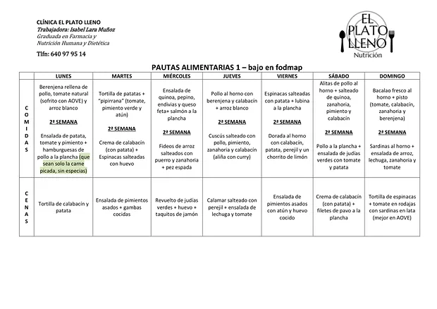
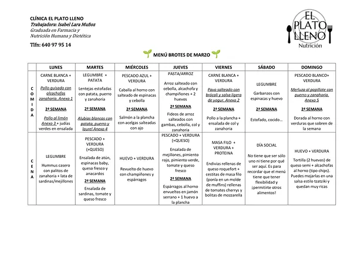
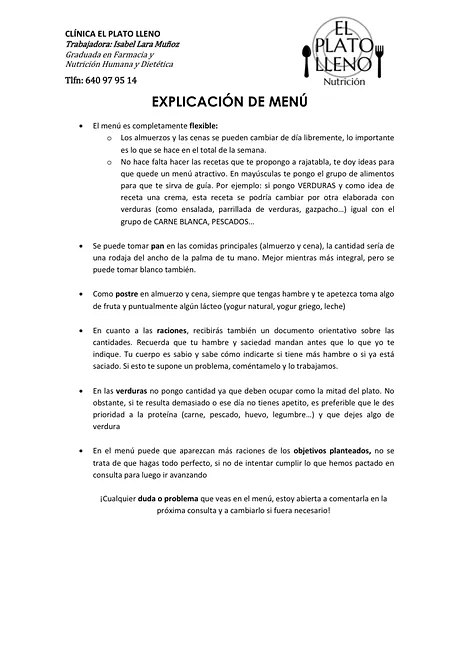

Programa digestivo para comer sin miedo
Para SIBO, colon irritable, hinchazón, gases, estreñimiento o reflujo. Un plan ordenado para entender qué te sienta mal, aliviar los síntomas y volver a comer variado, sin quedarte para siempre con una lista de alimentos prohibidos.

Este servicio es para ti si…
- Llevas tiempo con hinchazón, gases, dolor o cambios en el ritmo intestinal.
- Te han diagnosticado SIBO, colon irritable, reflujo o estreñimiento y no sabes qué comer.
- Has ido quitando alimentos y cada vez comes menos variado, pero sigues igual.
- Te da miedo comer fuera porque no sabes cómo te va a sentar.
- Has probado test de intolerancias o suplementos por tu cuenta sin resultado.
Cómo funciona
- Primera consulta · 1 hora
Valoración completa
Repasamos tus síntomas, tu historia clínica, la medicación y las pruebas que te hayan hecho, tus hábitos y tu relación con la comida. Si tienes analíticas o informes, tráelos.
- En 3 días como máximo
Tu plan
Recibes tus pautas personalizadas, tu menú para dos semanas explicado paso a paso y el diario de síntomas, para empezar a recoger datos y no suposiciones.
- Seguimientos · cada 2 o 3 semanas
Fase de alivio
Revisamos cómo vas y ajustamos. Si está indicado, reducimos durante un tiempo los alimentos que más fermentan (dieta baja en FODMAP), siempre con un plan y con fecha de salida.
- Seguimientos
Reintroducción
Volvemos a introducir los alimentos uno a uno y en cantidades crecientes, para descubrir qué toleras y hasta dónde. Es la fase más importante.
- Al final
Tu alimentación y tu alta
Construimos una alimentación lo más variada posible y terminas sabiendo qué hacer si vuelve una mala racha.
Cada caso es distinto: el número de sesiones depende de tus síntomas y de cómo vayas avanzando. Para empezar, lo más cómodo es el Bono inicio.
Lo que te llevas a casa
Todo el material es propio y lo recibes en PDF para tenerlo siempre a mano. Estas son algunas muestras.



Cuánto cuesta
Pago por adelantado. Te explico cómo al reservar.
- Primera consulta
- 55 €
- Seguimiento
- 45 €
- Bono inicio · 1.ª + 3 seguimientos
- 180 €